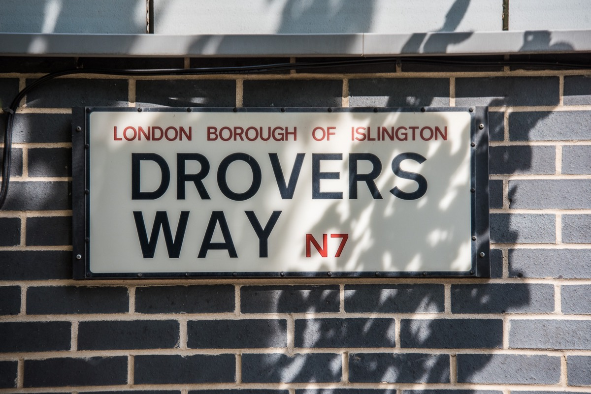
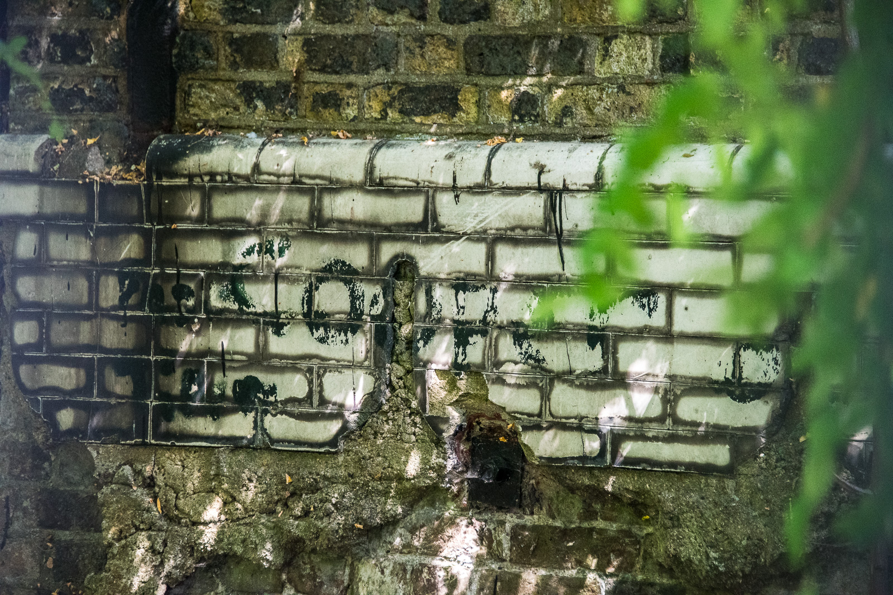

A Different Kind
of Tour
This is a companion piece to our earlier walk around Caledonian Park with Jenny and Luna of Clerkenwell & Islington Guides — but it is a different experience entirely. Islington Guided Walks run two distinct versions of the Caledonian Clock Tower visit: a longer Saturday walk covering the history of the tower and park at ground level, and a shorter weekday-evening tour that climbs the tower itself, focused on the clock mechanism and the view. This is the second kind.
The guides on this visit are not historians by trade. They are volunteer clock winders — the small, informal group who keep the tower's Victorian turret clock running week to week — and they say so themselves, cheerfully, at the start: "I'm not a professional guide or anything like that." What they lack in rehearsed patter, they make up for with the kind of detail only someone who actually maintains the mechanism would know.
The Safety
Briefing
Every visitor signs a disclaimer and hears the same briefing before setting off: 178 steps, mostly narrow ladder-stairs rather than a conventional staircase, one person moving at a time once past the first level, and a clear instruction to say something immediately if heights or confined spaces become a problem.
It is, by the guides' own account, an ordinary hazard of the job rather than a rare one — a version of the safety talk they clearly give at the start of every single tour, delivered with the slightly weary good humour of people who have given it many times before.
Offices, Banking
& the Toilets
The history recap on the way in is brisk: building work began in 1852, took three years, and the tower opened in 1855, reportedly with Prince Albert in attendance. It was never simply an ornament — the ground floor and surrounding rooms housed the paperwork end of the cattle trade: offices for buying and selling livestock, and banking facilities to handle the money changing hands on market days.

One corner held the market's public toilets — and the ceramic tiles that once lined them are still visible on the wall today, a small, unglamorous survival from the market's working life.
The Pubs, the Drovers
& the Tunnel
Four pubs once stood at the market's four corners, built to serve the men who worked the cattle through to sale — a drink and a meal after the job was done. Three of those buildings survive today: The Lion, The Lamb and The White Horse, all now converted to other uses. The fourth is gone entirely; guides on this tour recall it by a different name, though the record on this point is thin enough that it is worth treating as local memory rather than settled fact.
The market also provided its own accommodation for drovers, who might arrive having walked cattle in from as far as Wales. And underneath it all ran a tunnel — used, in the market's later years, to send slaughtered carcasses on by underground rail to Smithfield for sale, once refrigeration and rail transport made that the more efficient method.
From Cattle
to Bric-a-Brac
Once the live trade declined, the site's second life as a general and bric-a-brac market took over, running well into the 20th century until the ground was earmarked for redevelopment and the market relocated to Bermondsey in 1950. Traders would queue for the market's 10 o'clock opening and then dash for a pitch — not everyone had a registered spot, and old newsreel footage is said to survive showing the scramble.
The stallholders' stories that circulate on this tour have the flavour of market folklore more than documented history — including a claim, impossible to verify, that someone once bought an Egyptian mummy here for ten shillings.
More durable is the local tradition connecting the market to Jack Cohen, the future founder of Tesco, said to have had an early stall here. His first documented market pitch was in fact at Well Street in Hackney in 1919 — but markets like this one were exactly the sort of place a trader in his position would have worked in those years, so the connection, even if not literally provable, is not far-fetched.
The Commissioner's
Office
Partway up, the climb passes through what was once the market's supervisory office — described interchangeably by different guides across different tours as the "commissioner's" or "superintendent's" room. Its defining feature is its windows: large, deliberately positioned so that whoever held the job could watch the entire market floor from above without leaving the desk.
It is a small design detail, but a telling one — a reminder that everything about this tower, ornamental dragon weathervane included, was built around the practical business of supervising thousands of animals and the money moving between their buyers and sellers.
The Mechanism
Itself
Higher up, the tour reaches the room that gives the volunteer guides their name. The tower's turret clock is a weight-driven mechanism: a heavy weight descends slowly through the tower's full height, its fall regulated by a train of gears and a pendulum, and that descent is what powers the hands on all four faces and the strike of the bells.
The clock and its three bells were fully overhauled in 2016 as part of the tower's Heritage Lottery-funded restoration — the mechanism cleaned and repaired, the bells restored in situ. Islington Guided Walks like to point out, with some justice, that this clock predates the Great Clock at the Houses of Parliament — Big Ben — by four years.
Not every part is original, but several elements are, including at least one of the historic clock faces — small survivals inside a mechanism that has otherwise been substantially refurbished.
Winding It Forward
— and Back
Keeping a Victorian weight-driven clock running is a small, ongoing act of maintenance rather than a one-off job. The volunteer winders visit weekly — Friday evenings, organised informally among themselves — to haul the weight back up and keep the mechanism fed.
The clock changes twice a year present a particular quirk. A mechanism this old cannot simply be wound forward an hour each spring — so rather than force it, the volunteers stop the pendulum, let the clock run down and effectively "lose" eleven hours, and then restart it once the new time has caught up. It is a small, elegant compromise between a nineteenth-century machine and the twentieth-century convention of daylight saving.
At the very top, a pair of plastic peregrine falcon decoys stand guard against pigeons — a low-tech deterrent for a genuinely high-tech problem, since the mechanism and stonework both suffer from birds roosting in the tower's upper levels.
The View
from the Top
The reward for 178 steps is a 360-degree view across north and central London. On a clear day the guides point out Hampstead and Highgate to the north-west, and the Emirates Stadium — Arsenal's home ground, and by some reckonings the largest single patch of "green space" in the borough, however dubiously that claim holds up — closer at hand.
A Childhood
on the Old Estate
One of the volunteer guides on this particular tour grew up locally, on or around the old Market Estate before its 2000s redevelopment, and the personal recollections offered near the top of the tower are worth noting as memory rather than history — vivid, but understood as one person's account of one place at one time.
Before its restoration, the tower stood locked up and derelict for decades — long enough to become a fixture of local children's dares and ghost stories. One version, repeated to generations of local kids, held that a grey hand would reach out from inside the tower and push you down the stairs if you went in.
The guide's own account of the estate years nearby is blunter: doors kicked in, signs of a fire, pigeons everywhere, and children playing in and around buildings that were, by any adult standard, unsafe — the ordinary, half-remembered texture of growing up next to a site the council had not yet found the money or the will to fix.
It is a fitting closing note for a tower that has spent most of its life as something other than a tourist attraction — cattle market centrepiece, market office, derelict local landmark, and now, again, a place people climb on purpose.